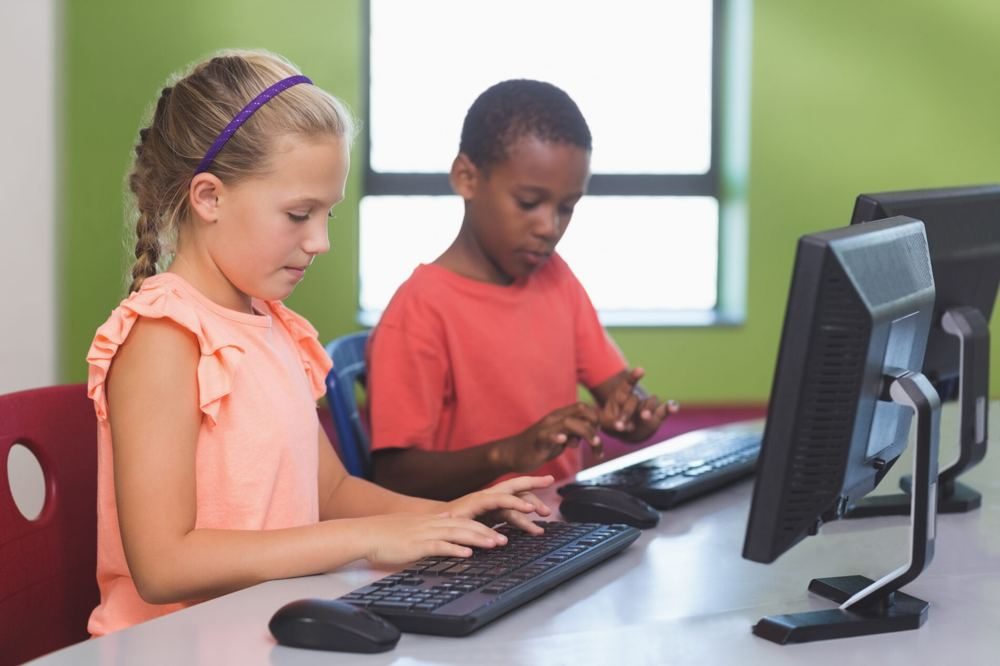

Feira Tecnológica 2026 — ETEC Guariba · Programação para Internet
Inclusão começa na escola.
O AcessaMais nasce de uma convicção simples: nenhuma criança, professor ou funcionário deveria ficar de fora do ambiente escolar por causa de uma barreira que a tecnologia já sabe resolver. Este site reúne por que a inclusão importa — socialmente, digitalmente, na escola e além dela — e demonstra, na prática, recursos de acessibilidade funcionando de verdade.

Inclusão digital começa cedo: acesso igualitário à tecnologia dentro da própria sala de aula.
Como navegar
Seis páginas, um só assunto
Cada página aprofunda um ângulo diferente da inclusão. Todas compartilham a mesma barra de acessibilidade funcional, no canto inferior direito.